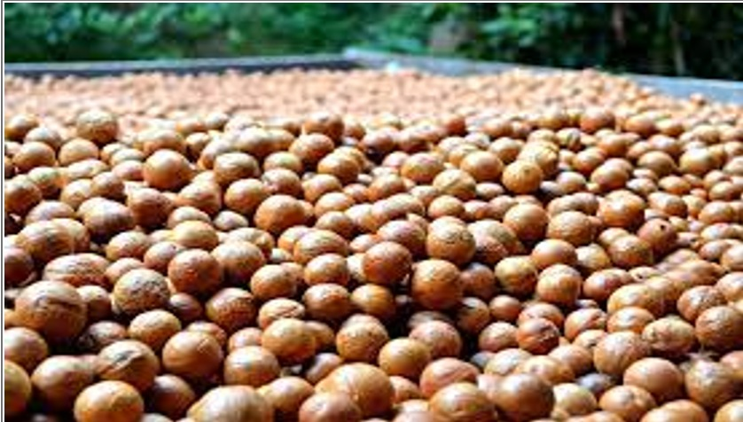
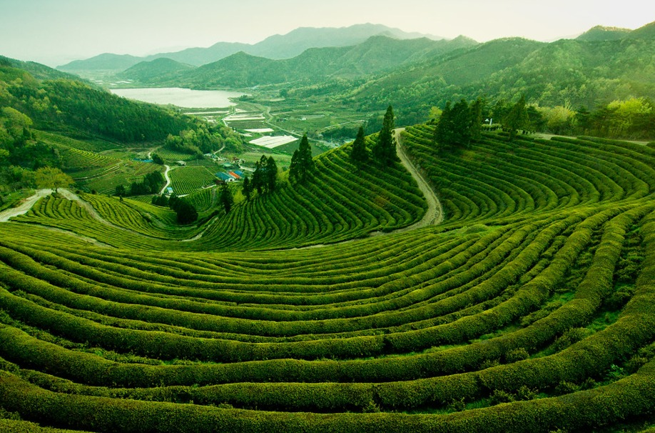
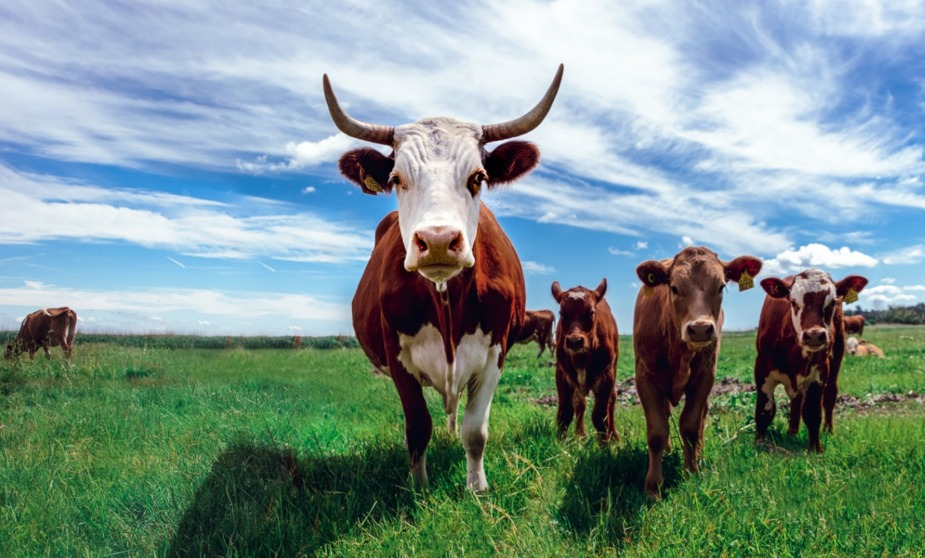
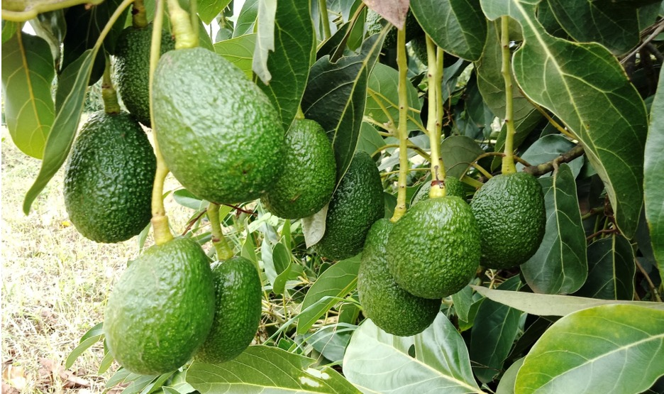
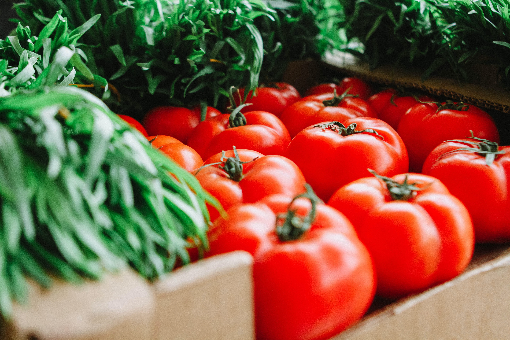

Services offered by Saudi farm
Macadamia
From seeding to fork, we have full control over the entire value chain ensuring complete traceability and a high quality product. MACADAMIA PRODUCTION GROWTH 118.36 ha - 2017 121.9 ha -2018 125.9 ha - 2019 131.9 ha -2020 135.6 ha - 2021
Tea
Producing products of consistent high quality is fundamental to us. Not only does this reflect market demand but also our values as a company. The tea is produced using no insecticides, no flavoring preservatives or additives, sustainable fuel sources and a lot of fresh air.
Livestock
Livestock Our cattle are ranched within our farms QUALITY PRODUCTS AND SERVICES We run two small ranch dairies supplying our staff with milk, with any excess sold locally. Our slaughterhouse provides cold dressed carcasses to the Sudi Butchery and for sale to local markets.
Avocado
The Avocado is packed into cartons of either 5kg or 10kg cartons. The packed fruit is then placed in cold rooms and cooled in preparation for shipping in refrigerated containers. The time taken from picking and packing to reaching the market is 30 days on average.
Tomatoes
Our plum-style tomatoes are grown and harvested in the Sudi Farm, and are then packaged in open and closed fruit crates (tomato crates), tubs, cartons, trays and jointed boxes.
Peppers

harvested by hand two to four times during the growing season. Mechanical harvesters are available for harvesting hot peppers (jalapeño, chiles, and hot cherries) with a once-over harvest.